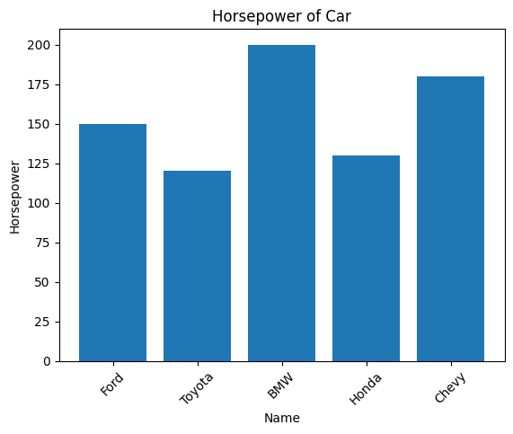
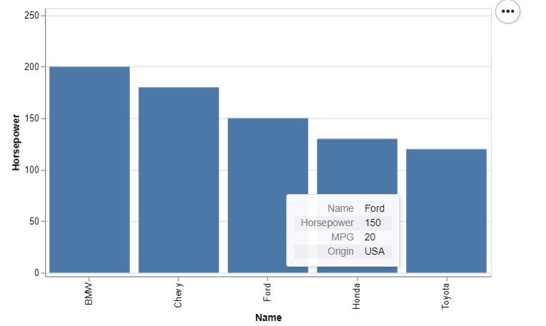
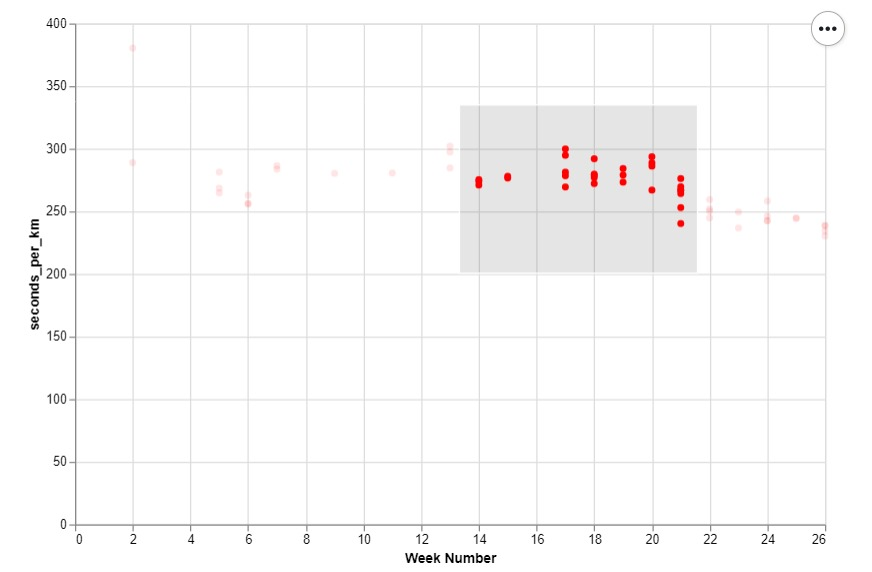
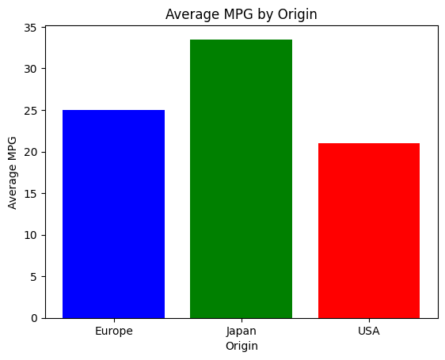
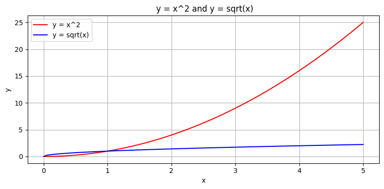
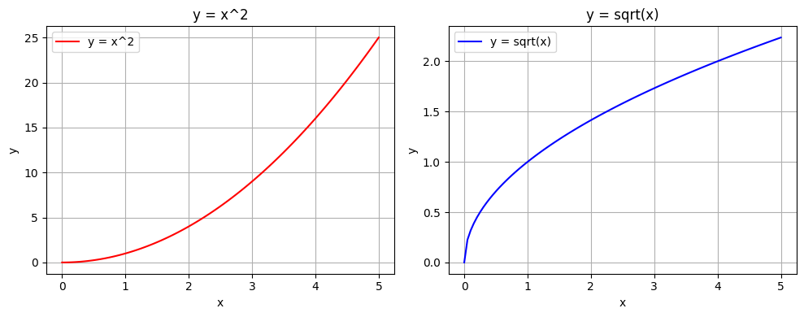
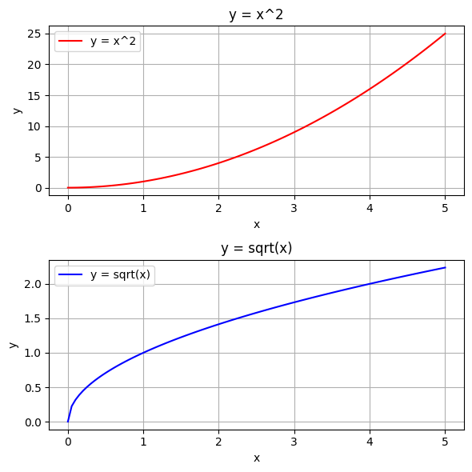

! pip install altair Altair: The interactive data visualization tool
Introduction
The Altair library was released in August 2016 by Jake VanderPlas, Brian Granger, and other contributors from the Jupyter and PyData communities. It is a declarative statistical visualization library for Python, meaning that we don’t need to code how to do something instead we need to just tell what to do, altair will automatically figure out how to do it. Altair library creates beautiful interactive large variety of graphs like simple bar chart, histograms, line plot, scatter plot, to more complex graphs like heatmaps, geographical maps, etc.
So, why do we need it? We can use the simply pandas and matplotlib libraries for creating these graphs.
Altair library makes the graph interactive which we can’t get from the above mentioned libraries or we can get them but it would require to code alot, with features like tooltips, zooming in and out of plots, selections with opacity, color, size (hover effect), dynamic update, also altair allows us to export the file into html files.
Installation & Setup:
Altair can be simply installed by running the following command on the terminal:
Step 1:
Using pip:
Using condas
! conda install -c conda-forge altairStep 2:
Install a Renderer (For Jupyter, Colab, or VS Code), which is required for displaying charts, plots, etc.
For Jupyter Notebook
! pip install vega_datasets notebook vegaimport altair as alt
alt.renderers.enable('notebook')For VS Code
import altair as alt
alt.renderers.enable('mimetype')For Google Colab
import altair as alt
alt.renderers.enable('colab')Key Features & Explanation with code examples:
1. Declarative Syntax and Conciseness
Altair allows us to write the code in declarative manner, that is we need to specify only what we want and not how we want, altair will figure it out at it’s own end. Also altair allows us to write the code in fewer lines due to its declarative syntax property.
import pandas as pd
import altair as alt
import matplotlib.pyplot as plt
df = pd.DataFrame({
'Name': ['Ford', 'Toyota', 'BMW', 'Honda', 'Chevy'],
'Horsepower': [150, 120, 200, 130, 180],
'MPG': [20, 35, 25, 32, 22],
'Origin': ['USA', 'Japan', 'Europe', 'Japan', 'USA']
})
df| Name | Horsepower | MPG | Origin | |
|---|---|---|---|---|
| 0 | Ford | 150 | 20 | USA |
| 1 | Toyota | 120 | 35 | Japan |
| 2 | BMW | 200 | 25 | Europe |
| 3 | Honda | 130 | 32 | Japan |
| 4 | Chevy | 180 | 22 | USA |
Using Matplotlib:
plt.bar(df['Name'], df['Horsepower'])
plt.title('Horsepower of Car')
plt.xlabel('Name')
plt.ylabel('Horsepower')
plt.xticks(rotation=45)
plt.show()
Using altair:
chart = alt.Chart(df).mark_bar().encode(
x='Name', y='Horsepower'
).properties(title='Horsepower of Car')
chart2. Interactivity with graphs
Altair library makes the graph interactive-
- When we add the .interactive() parameter enabling us to zoom in and out of the graph and drag also.
- We can add brush with opacity to be able to highlight a particular section
- Use tooltips
print("\tTooltip")
from IPython.display import Image, display
display(Image(filename="1.jpg")) Tooltip
print("\tHighlighting a specific section")
from IPython.display import Image, display
display(Image(filename="2.jpg")) Highlighting a specific section
3. Data aggregation
In altair we need not process the data before, that is we don’t need to create a groupby object beforehand. But in matplotlib we first have to select the specific data using aggregation.
Matplotlib
avgmpg = df.groupby('Origin')['MPG'].mean()
plt.bar(avgmpg.index, avgmpg.values, color=['blue', 'green', 'red'])
plt.title('Average MPG by Origin')
plt.xlabel('Origin')
plt.ylabel('Average MPG')
plt.show()
Altair
chart = alt.Chart(df).mark_bar().encode(
x='Origin', y=alt.Y('mean(MPG)'),
color='Origin'
).properties(title='Average MPG by Origin')
chart4. Handling Multiple plots
Altair allows us to plot multiple plots easily. It allows us to plot more than one parameters in a single plot just by using + operator, plot two graphs horizontally(side by side) by using “|” operator and vertically by using “&” operator, which is much more simpler than in matplotlib.
Matplotlib
import pandas as pd
import numpy as np
import altair as alt
import matplotlib.pyplot as plt
x_values = np.linspace(0, 5, 100)
data = pd.DataFrame({
'x': x_values,
'y_x2': x_values**2,
'y_sqrt': np.sqrt(x_values)
})Ploting multiple graphs on same plot
Matplotlib
plt.figure(figsize=(8, 4))
plt.plot(data['x'], data['y_x2'], 'r-', label='y = x^2')
plt.plot(data['x'], data['y_sqrt'], 'b', label='y = sqrt(x)')
plt.title(' y = x^2 and y = sqrt(x)')
plt.xlabel('x')
plt.ylabel('y')
plt.legend()
plt.grid(True)
plt.tight_layout()
plt.show()
Altair
x2 = alt.Chart(data).mark_line(color='red').encode(
x='x', y='y_x2'
).properties(width=300, height=200)
sqrt = alt.Chart(data).mark_line(color='blue').encode(
x='x', y='y_sqrt'
).properties(width=300, height=200)
(x2 + sqrt).properties(title='y = x^2 and y = sqrt(x)')Ploting graphs side by side
Matplotlib
fig, (ax1, ax2) = plt.subplots(1, 2, figsize=(10, 4))
ax1.plot(data['x'], data['y_x2'], 'r', label='y = x^2')
ax1.set_title('y = x^2')
ax1.set_xlabel('x')
ax1.set_ylabel('y')
ax1.legend()
ax1.grid(True)
ax2.plot(data['x'], data['y_sqrt'], 'b', label='y = sqrt(x)')
ax2.set_title('y = sqrt(x)')
ax2.set_xlabel('x')
ax2.set_ylabel('y')
ax2.legend()
ax2.grid(True)
plt.tight_layout()
plt.show()
Altair
x2 = alt.Chart(data).mark_line(color='red').encode(
x='x', y='y_x2'
).properties(width=200, height=200, title='y = x^2')
sqrt = alt.Chart(data).mark_line(color='blue').encode(
x='x',
y='y_sqrt'
).properties(width=200, height=200, title='y = sqrt(x)')
x2 | sqrtPloting graphs one above other
Matplotlib
fig, (ax1, ax2) = plt.subplots(2, 1, figsize=(6, 6))
ax1.plot(data['x'], data['y_x2'], 'r-', label='y = x^2')
ax1.set_title('y = x^2')
ax1.set_xlabel('x')
ax1.set_ylabel('y')
ax1.legend()
ax1.grid(True)
ax2.plot(data['x'], data['y_sqrt'], 'b-', label='y = sqrt(x)')
ax2.set_title('y = sqrt(x)')
ax2.set_xlabel('x')
ax2.set_ylabel('y')
ax2.legend()
ax2.grid(True)
plt.tight_layout()
plt.show()
Altair
x2 = alt.Chart(data).mark_line(color='red').encode(
x='x', y='y_x2'
).properties(width=300, height=150, title='y = x^2')
sqrt = alt.Chart(data).mark_line(color='blue').encode(
x='x', y='y_sqrt'
).properties(width=300, height=150, title='y = sqrt(x)')
x2 & sqrtUSE CASES
Altair is widely used in different domains because of its interactive capabilities, declarative syntax, and smooth integration with Python data science tools. Here are some important areas where Altair proves to be especially useful:
1. Data Exploration & Analysis • Altair allows users to visualise distributions and relationships in datasets, making it perfect for rapid exploratory data analysis (EDA).
2. Interactive Dashboards & Reports • With Altair, users can create interactive plots that display dynamic distributions in environments like Jupyter Notebooks, Streamlit, or Voila.
3. Machine Learning & AI • It aids in important analyses such as visualizing model performance (e.g., confusion matrices, ROC curves) and understanding data distribution prior to model training.
4. Business Intelligence & Decision Making • Companies uses Altair Library for data-driven storytelling to extract meaningful insights from their data.
5. Realtime Data Monitoring Altair is capable to visualise streaming data which is useful in monitoring website traffic, server performance or stocks etc.
6. Geographic Data • Altair enables users geospatial plotting, making it valuable for mapping and location-based analytics.
CONCLUSION
Altair is an easy-to-use, high-powered, and versatile data science visualization library that’s built for contemporary data science workflows. It’s remarkable in many ways. Altair may not completely replace Matplotlib or Seaborn for highly customised visualisations, but it is ideal in scenarios where expressiveness, simplicity, and interactivity are important. For data analysts, machine learning practitioners or businesses Altair is a crucial tool to include in the data visualisation toolkit!
REFERENCES and FURTHER READINGS
Official Documentation:
https://altair-viz.github.io/user_guide/api.html#api
Video Tutorial:
1) https://www.youtube.com/watch?v=ms29ZPUKxbU by Jake VanderPlas
2) https://youtu.be/umTwkgQoo_E?si=DbeemSCUDsWo4mCX
Vega-Lite Docs:
https://vega.github.io/vega-lite-v2/docs/